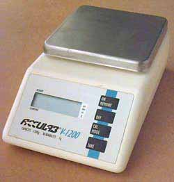

This scale is made by Acculab. I bought it from Champion Model Products a few years ago. Despite the price, I love this scale and use it for all sorts of things around the shop. Measuring epoxy and casting resins, counting parts and spare change, as well as general weighing of models. Power is supplied by an AC adapter or a 9v battery. It has memory and counting functions and will display in grams and ounces.
| Capacity | Resolution | Units |
| 1200 | 0.1 | grams |
| 40 | 0.01 | Ounces |
Copyright 1998, Thayer Syme. All rights reserved